This package contains time-dependent and controlled voltage and current sources. Most of the sources use the behavior modeled in the Modelica.Blocks.Sources package. All sources are ideal in the sense that no internal resistances are included.
| Name | Description |
|---|---|
| 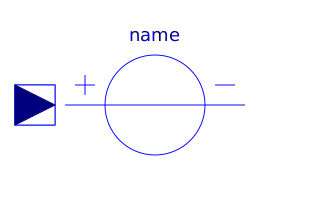 SignalVoltage | Generic voltage source using the input signal as source voltage |
| 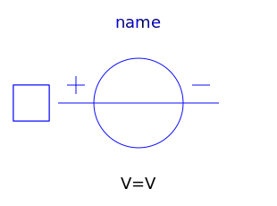 ConstantVoltage | Source for constant voltage |
| 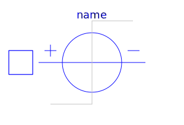 StepVoltage | Step voltage source |
| 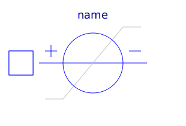 RampVoltage | Ramp voltage source |
| 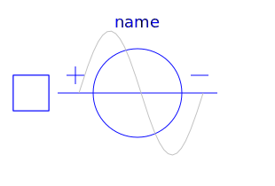 SineVoltage | Sine voltage source |
| 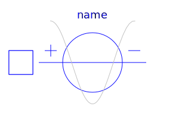 CosineVoltage | Cosine voltage source |
| 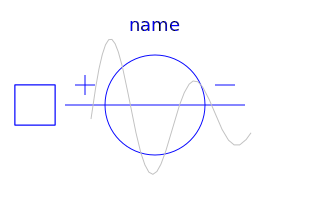 ExpSineVoltage | Exponentially damped sine voltage source |
| 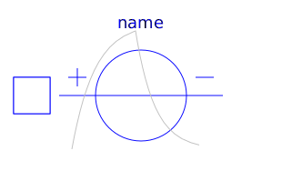 ExponentialsVoltage | Rising and falling exponential voltage source |
| 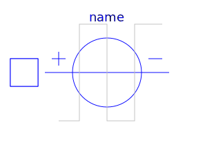 PulseVoltage | Pulse voltage source |
| 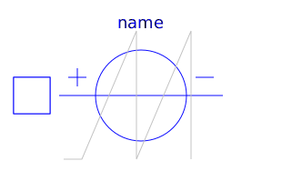 SawToothVoltage | Saw tooth voltage source |
| 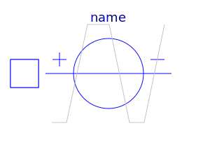 TrapezoidVoltage | Trapezoidal voltage source |
| 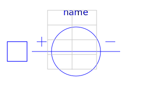 TableVoltage | Voltage source by linear interpolation in a table |
| 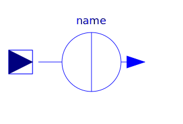 SignalCurrent | Generic current source using the input signal as source current |
| 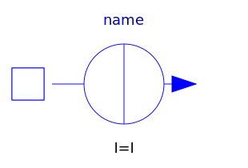 ConstantCurrent | Source for constant current |
| 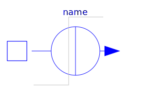 StepCurrent | Step current source |
| 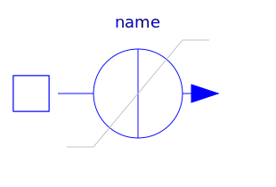 RampCurrent | Ramp current source |
| 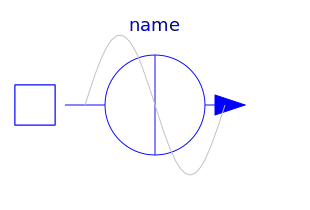 SineCurrent | Sine current source |
| 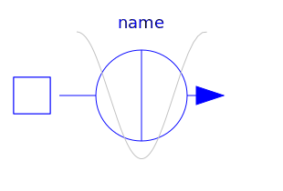 CosineCurrent | Cosine current source |
| 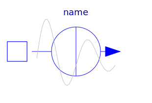 ExpSineCurrent | Exponentially damped sine current source |
| 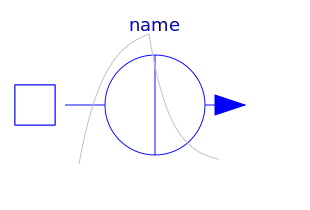 ExponentialsCurrent | Rising and falling exponential current source |
| 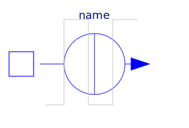 PulseCurrent | Pulse current source |
| 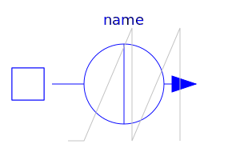 SawToothCurrent | Saw tooth current source |
| 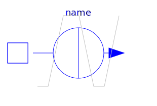 TrapezoidCurrent | Trapezoidal current source |
| 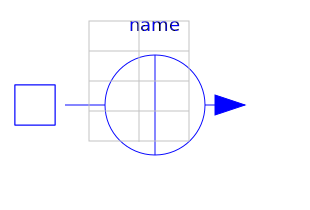 TableCurrent | Current source by linear interpolation in a table |
| 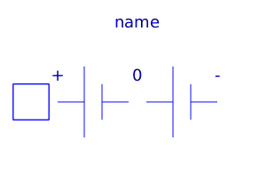 SupplyVoltage | Supply voltage (positive and negative) |